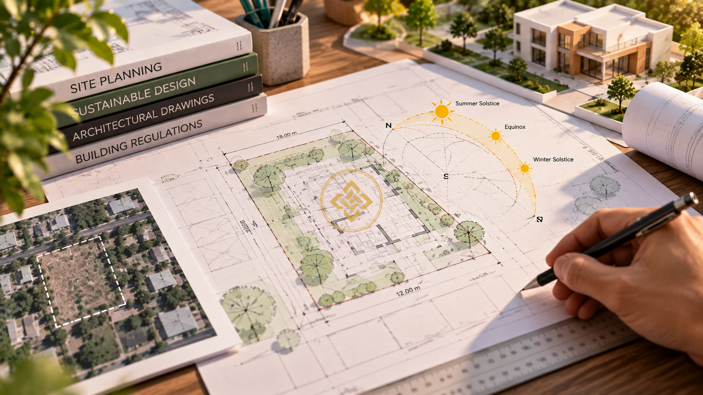

Building a home is often the most significant financial, emotional, and creative investment an individual makes. Yet, across Varanasi and neighboring regions in Uttar Pradesh, the most common regrets voiced by homeowners after moving in — dark central hallways, kitchens positioned in suffocating corners, excessive summer electricity bills, or unexpected plumbing leaks — are almost never structural failures of cement and steel.
They are planning failures. When homeowners rush to pour foundations without disciplined blueprints, every subsequent modification carries an exorbitant cost in demolition, contractor dispute, and compromised livability.
The Golden Rule of Architecture
"Every hour spent with pencil and ruler on paper eliminates three days of sledgehammer work on site." Planning is not merely picking wall colors; it is an exact science of orientation, movement, acoustics, and air.
1. Site Feasibility, Microclimate & Sun Path Orientation
Before drawing a single room boundary, an architect must read the plot. In the Northern Hemisphere — and particularly during the blistering summers of Eastern UP — solar geometry dictates comfort.
A home whose primary bedroom features large unshaded western glazing will trap thermal heat until midnight, forcing air conditioning systems to run at peak capacity. Conversely, an intelligently oriented home utilizes:
- North-Facing Openings: Provide even, glare-free indirect sunlight ideal for living rooms, study lounges, and courtyards.
- South-Facing Shading: Capture passive warmth during mild winters while utilizing calculated overhangs (chajjas) to deflect steep summer sun rays.
- Prevailing Wind Corridors: Arranging windows across opposite facades to stimulate passive cross-ventilation, flushing out hot indoor air naturally.

2. Spatial Circulation & Zoning: Private vs. Public Envelopes
Poorly planned houses feel chaotic because their circulation paths intersect inappropriately. If a guest seated in your formal drawing room can see directly into a master bathroom or hear dishwashing from the scullery, the layout lacks acoustic and visual buffering.
At Swastika Design & Constructions, our architectural planning method categorizes floor plates into three distinct functional zones:
- Public Realm: Foyer, formal living lounge, visitor powder room, and parking portico.
- Semi-Private Realm: Dining hall, central prayer/puja court, family lounge, and kitchen.
- Private Sanctuary: Bedrooms, dressing areas, private balconies, and study suites.
Circulation corridors should serve as transitions of silence rather than wasted dead square footage. Keeping hallway widths between 3'6" to 4'0" ensures comfortable clearance for furniture movement without encroaching upon bedroom floor plates.
“Architecture is the thoughtful making of spaces. It is not the superficial filling of an empty plot with walls, but the deliberate carving of daylight, proportion, and quietude.”
— Ankur Pratap Singh, Principal Designer3. Harmonizing Vastu Shastra with Contemporary Living
Many homeowners in Varanasi believe they must choose between a contemporary minimalist aesthetic and traditional Vastu principles. This is a false dilemma. In classical Indian architecture, Vastu Shastra is fundamentally an intuitive environmental science derived from solar paths and magnetic fields.
You can easily align modern luxury layouts with environmental equilibrium:
- Agni (Southeast): The ideal sector for kitchens. In the morning, ultraviolet rays purify food preparation surfaces, while thermal drafts move away from living quarters.
- Ishanya (Northeast): The zone of water and morning light. Perfect for calm prayer corners, open water elements, or light study desks.
- Nairutya (Southwest): The zone of earth and stability. Suited for master suites, heavy wardrobes, and structural load distributions.
4. The Unseen Backbone: Structural Grid & MEP Coordination
The most common reason for unexpected budget blowouts during civil execution is a mismatch between architectural plans and structural/MEP (Mechanical, Electrical, Plumbing) engineering.
When walls on the first floor do not stack cleanly over ground-floor beams, structural engineers are forced to introduce costly transfer slabs or oversized beams that drop awkwardly across ceiling lines, ruining interior aesthetics.
Before initiating earth excavation, demand an integrated drawing set including:
- Column Centerline Layouts: Aligning structural RCC framing to ensure clean room geometries.
- Concealed Plumbing Shafts (Ducts): Keeping drain pipes accessible for future maintenance without chipping structural brickwork.
- Electrical Conduit Routing: Planning switchboard points, automated lighting panels, and HVAC drain paths before casting slabs.
5. Regulatory Clearances: Varanasi Development Authority (VDA) Bylaws
Building in Varanasi requires adherence to local municipal bylaws and VDA regulations. Violating mandatory setbacks or exceeding permitted Ground Coverage Ratios (FAR) can lead to stop-work notices, compounding penalties, or power/water connection delays.
Key regulatory parameters to resolve during pre-construction planning include:
- Front & Rear Setbacks: Leaving statutory open space for fire safety, sunlight, and ventilation.
- Rainwater Harvesting Pit (RWH): Mandatory for plots above prescribed threshold areas in urban zones.
- Structural Safety Certification: Ensuring your foundation depth accounts for the alluvial soil conditions common across the Gangetic basin.
6. Architectural Pre-Construction Checklist Matrix
Review this side-by-side checklist to evaluate whether your project is truly ready for ground-breaking or still vulnerable to expensive errors:
| Planning Stage | Ad-Hoc / Contractor Method | SDNC Architectural Method |
|---|---|---|
| Spatial Layout | Basic hand sketch or generic internet plan | Custom microclimate, solar & Vastu-tailored layouts |
| Visual Confidence | Imagining spaces from 2D flat lines | Photoreal 4K CGI elevation & interior daylight walk-throughs |
| Cost Predictability | Frequent surprise variations & slab-level rework | Locked Bill of Quantities (BOQ) with fixed specs |
| Supervision | Left to mason's discretionary judgment | Architect-led rebar and structural audit checklists |
7. Frequently Asked Questions
A comprehensive architectural planning cycle — including site survey, iterative floor planning, 3D visualization, structural calculations, and approval drawings — typically requires 4 to 8 weeks depending on plot size and client revisions. Investing this time upfront saves months of delays during construction.
While minor partition wall alignments can be tweaked before brickwork begins, moving columns, structural walls, plumbing stacks, or staircases after foundations are cast is dangerous and cost-prohibitive. All core functional decisions should be locked during the 3D visualization phase.
A civil contractor typically focuses on structural erection and material consumption. An architect orchestrates human ergonomics, natural lighting, ventilation, visual sightlines, furniture clearances, interior integration, and municipal bylaws — delivering a space that feels harmonious and elevates your daily life.
Yes. A professional soil investigation helps the structural engineer understand the site's bearing capacity and soil conditions before foundation dimensions are finalized. This reduces the risk of inappropriate foundation design, settlement problems, and expensive structural changes later.
Yes. Vastu considerations can be integrated during the planning stage without compromising contemporary functionality or aesthetics. Room zoning, kitchen placement, entrance orientation, natural light, ventilation, and circulation can be coordinated to create a practical modern layout while accommodating the client's Vastu preferences.